Qu'est-ce qu'un vecteur?

Ce que vous devez avoir compris avant de lire ce cours:
- Aucun pré-requis est nécessaire pour comprendre ce cours
Les vecteurs comme déplacements
Aujourd’hui, pour les besoins de ce cours, je suis allé avec mon
micro à la main dans le self d’un lycée Poitevin. Voici un bref
extrait de ce que j’ai pu enregistrer :
- Du coup t’as fait quoi Tom ce matin ?
- J’suis allé en maths, c’était naze… Après on est allé au gymnase
pour faire du badminton, c’était naze aussi. Et toi Paul?
- On est allé au gymnase pour le badminton aussi avant vous, puis
on a continué le théâtre en Français. Le prof est complètement barré !
Il veut qu’on joue une pièce que nous aurons écrits
ensemble la semaine prochaine !
- Sérieux ?
- Ouai…
Cette discussion tout à fait authentique nous intéresse pour notre
étude des vecteurs. Pourquoi ? Parce que les vecteurs peuvent, entre
autres choses, représenter des déplacements ! Ils ne font pas que ça
bien sûr, mais en attendant il est très utile dans un premier temps
pour comprendre intuitivement ce qui va suivre de les voir ainsi.
Voyons ainsi le déplacement de Tom ce matin :
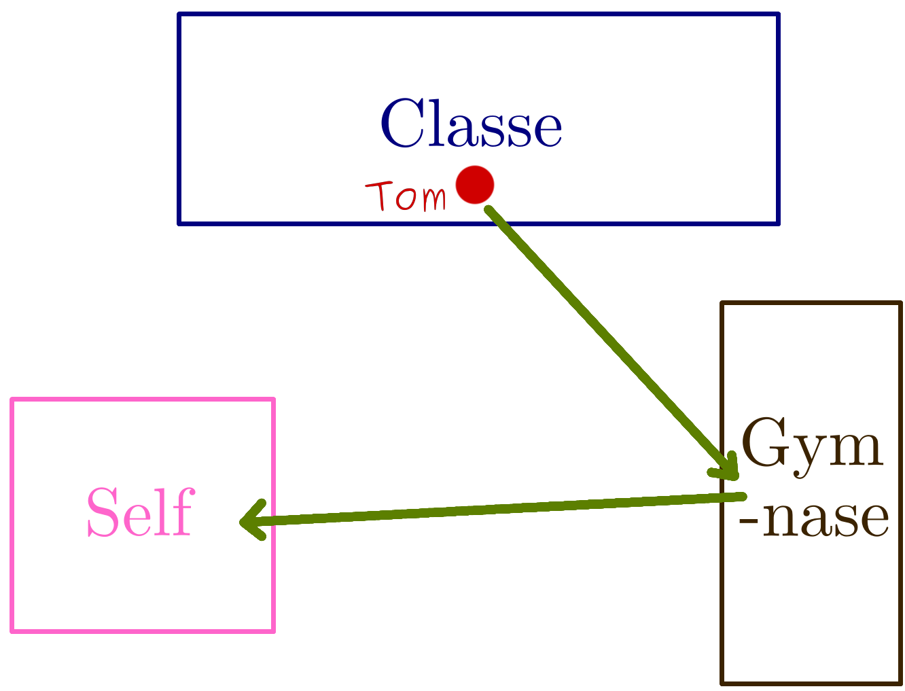
Schéma du déplacement de Tom ce matin
Et de Paul :
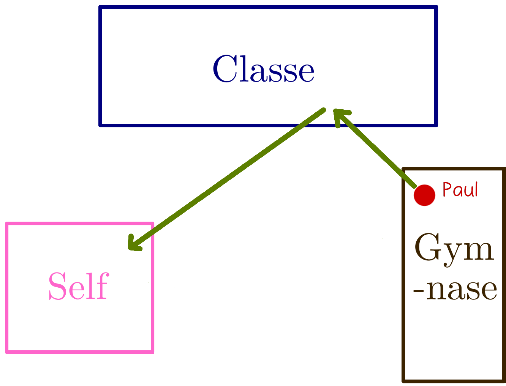
Schéma du déplacement de Paul ce matin
Les flèches que vous voyez sur ces schémas représentent des
déplacements sur une certaine distance et dans une certaine direction.
Ces flèches sont des vecteurs.
Donnons maintenant des noms aux vecteurs de Tom :
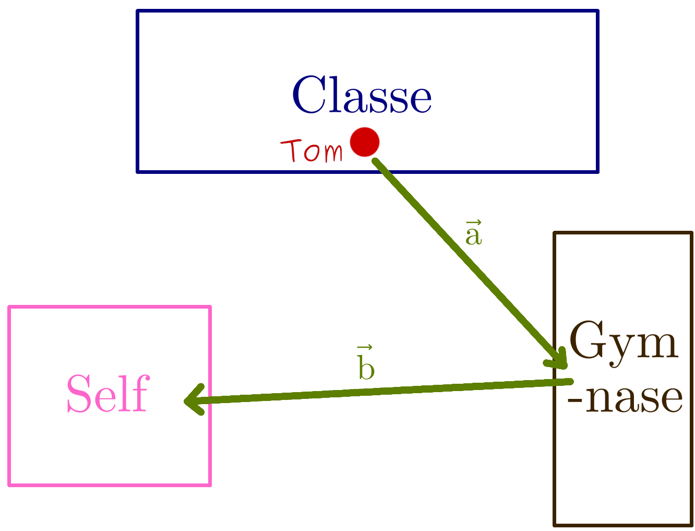
Schéma du déplacement de Tom ce matin
Le vecteur 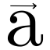
représente le déplacement de Tom du cours de maths au gymnase.
Enfin, le vecteur 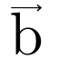
représente le déplacement de Tom du gymnase au self.
On peut nommer différemment les vecteurs de Tom, d’une manière
peut-être un peu plus claire, avec les lettres qui représentent
les points de départ et d’arrivée :
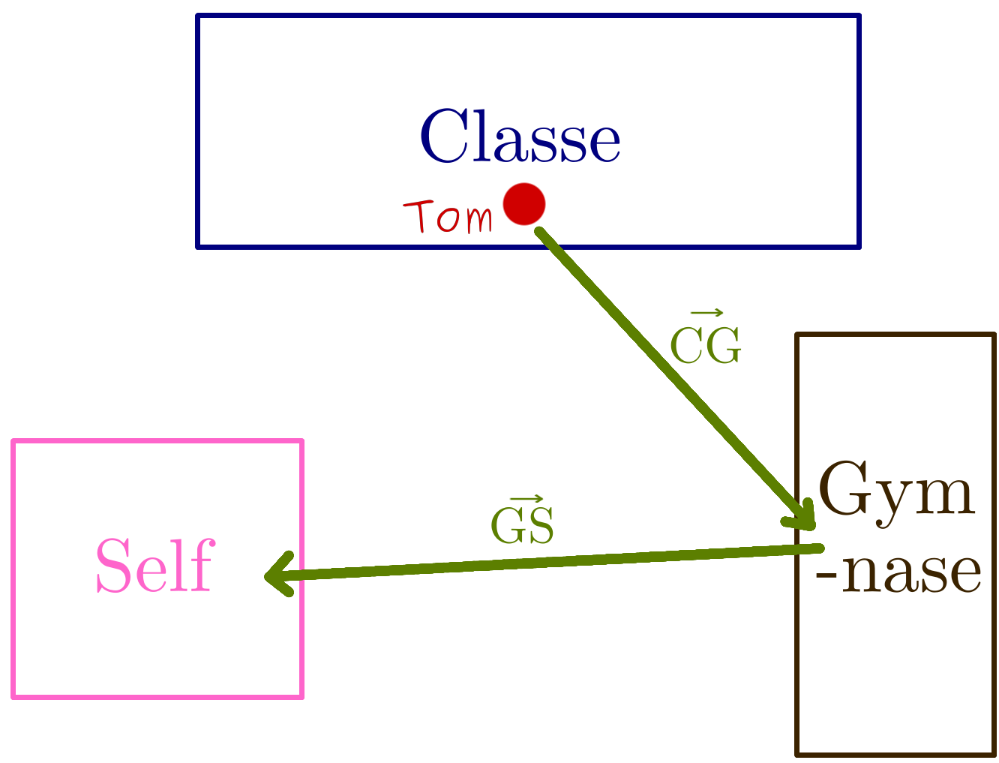
Schéma du déplacement de Tom ce matin
Le vecteur 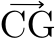
représente alors aussi le déplacement de Tom de la
Classe au Gymnase et le vecteur
le déplacement de Tom du Gymnase au Self (remarquez que les le ‘C’
correspond au ‘C’ de classe, le ‘G’ au ‘G’ de gymnase, etc.)
Les trois critères...
Définie de manière un peu plus mathématique un vecteur est un déplacement
d’un point, que nous avions appelé Tom jusqu’ici, défini selon trois
critères :
-
Sa longueur (on dit aussi sa norme)
-
Sa direction
-
Son sens
Là, normalement c’est le moment où vous me demandez :
« c’est quoi la différence entre la direction et le sens ? »
Très très bonne question ! En effet il est crucial pour vous de
comprendre cette différence si vous voulez bien vous entendre avec
les vecteurs.
Dans la vie de tous les jours, direction et sens c’est… La même chose.
En mathématiques cependant on a besoin de faire une distinction…
Sans cette distinction on risque d’écrire des choses aussi fausses
que si nous disions que 2 + 2 = 682…
Le mieux est encore que je vous montre la différence :
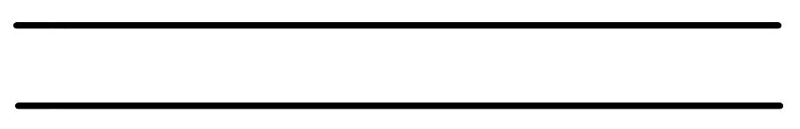
Deux lignes dont la direction est horizontale
Ces deux lignes ont la même direction (elles sont horizontales).
Mais on n’a pas donné de sens au déplacement. Rappelez-vous : un
vecteur est un déplacement d’un point donné vers un autre !
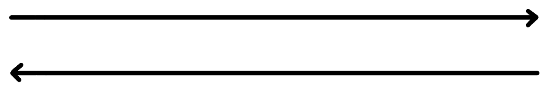
Deux lignes dont la direction est horizontale avec un sens opposé
Ces deux lignes ont toujours la même direction (ils sont horizontaux)
mais ont maintenant un sens opposé (l’une d’entre elles va de la
gauche vers la droite tandis que l’autre va de la droite vers la
gauche).
Même exemple ici :
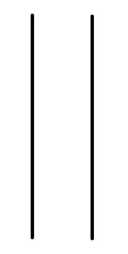
Deux lignes dont la direction est verticale
Ces deux lignes ont la même direction (elles sont verticales).
Maintenant donnons-leur un sens :
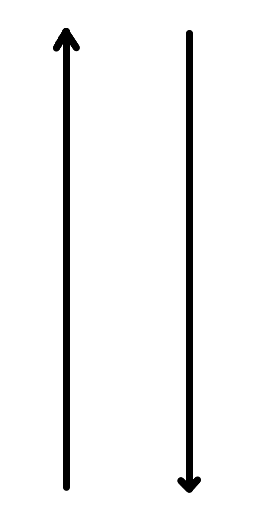
Deux lignes dont la direction est verticale
Ces deux lignes ont toujours la même direction (elles sont verticales)
mais ont maintenant un sens opposé (l’une d’entre elles va de bas en haut
et l’autre de haut en bas).
En d’autres termes, chez les vecteurs la direction nous dit si le
déplacement est horizontal, vertical ou en diagonal et le sens nous
dit d’où on part et vers où on va.
Conclusion
Cette définition du vecteur par ces trois critères est extrêmement importante : c’est
elle qui permet de déterminer si deux vecteurs (deux déplacements) sont égaux.
Or c’est cette égalité qui permet ensuite de faire des calculs comme : ajouter et
soustraire des déplacements (et donc des vecteurs) ou encore de multiplier ces
déplacements. Et ce sont ces mêmes calculs qui permettent de modéliser, pour le
physicien, des déplacements de planètes, de satellites, des forces, etc.
Bref ces trois petits critères de rien du tout ont permis de mettre
les satellites en orbite grâce auxquels vous lisez aujourd’hui ce
site : respect quoi !
Cependant avant de découvrir l’égalité de vecteurs et d’en découdre avec les
additions, soustractions et multiplications il semblerait que nous ayons
oublié un cas... Que se passe-t-il si je veux représenter, avec les vecteurs,
l’opposé d’un déplacement ? Ou, pour poser la question autrement : comment
peut-on dire avec des vecteurs, qu’un personnage ou un satellite ou tout
autre chose, fait le chemin inverse à celui qu’il a fait auparavant ?
Rendez-vous à la prochaine leçon pour la réponse à cette question !
Que signifient les coordonnées d'un vecteur?

{kind=link}
{kind=link}
{kind=link}
{kind=link}
{kind=link}
{kind=link}
{kind=link}
{kind=link}